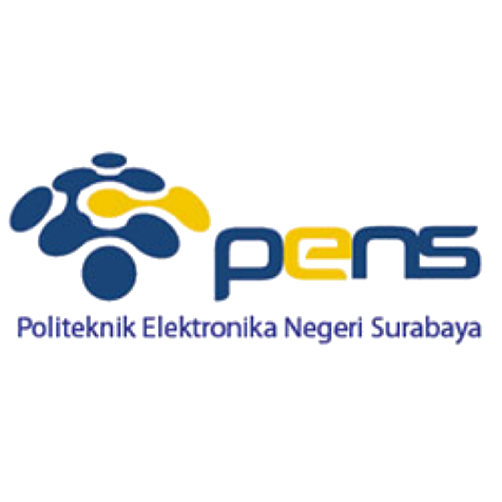
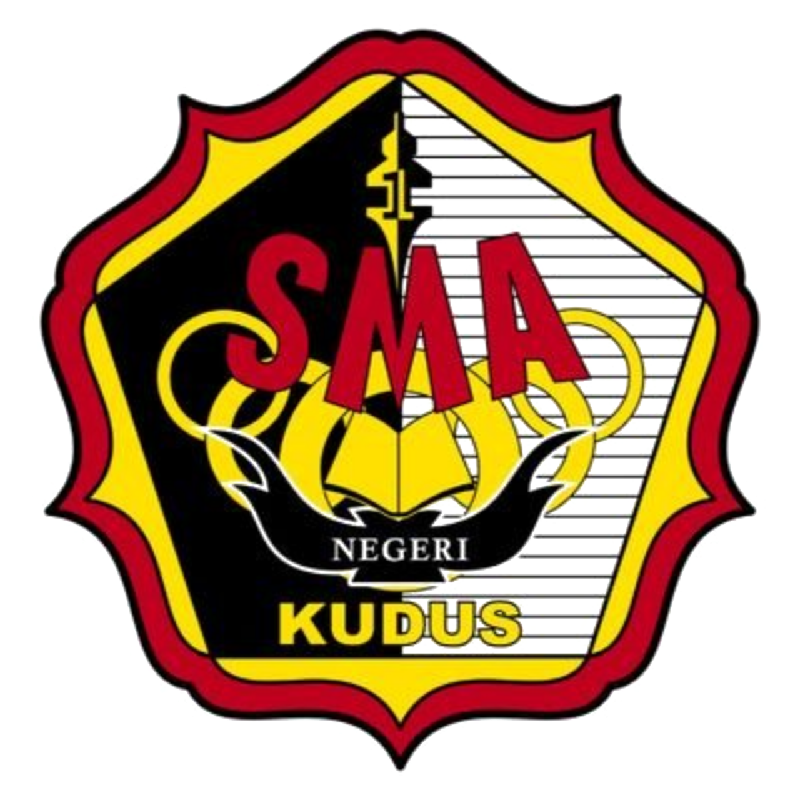
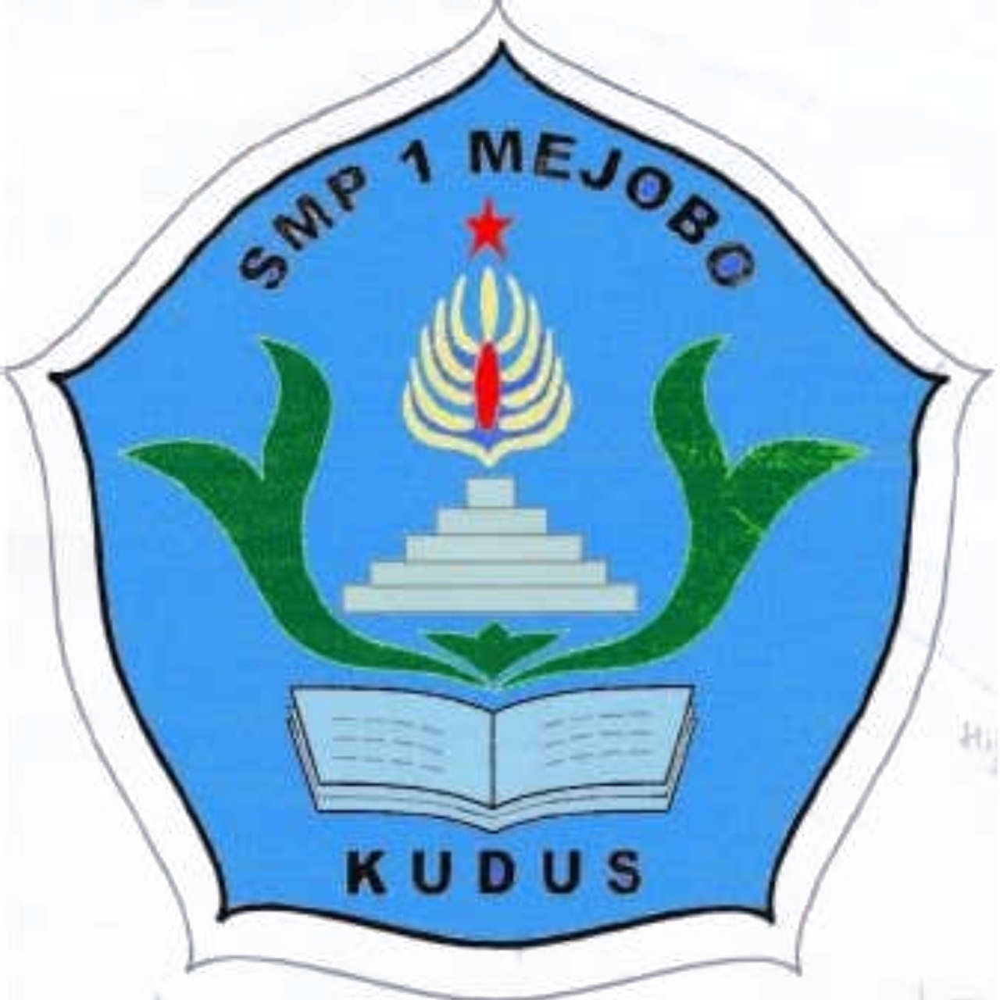

EDUCATION
-
PENS - D4 Teknik Informatika
2021-Sekarang
Politeknik Elektronika Negeri Surabaya
Politeknik Elektronika Negeri Surabaya (PENS) atau Electronic Engineering Polytechnic Institute of Surabaya (EEPIS) adalah perguruan tinggi negeri yang terdapat di Kota Surabaya, Provinsi Jawa Timur, Indonesia. Politeknik ini terkenal karena keunggulannya di bidang robotika terbukti dengan prestasinya dalam Kontes Robot Indonesia (KRI) yang berhasil memenangkannya berturut-turut hingga 12 kali. Selain itu, PENS juga merupakan penyelanggara S2 terapan pertama di Indonesia. Selain di bidang robotika, PENS juga unggul di bidang Teknologi Informasi terbukti dengan diraihnya penghargaan TeSCA untuk kategori Politeknik yang diselenggarakan oleh Telkom.
-
SMA NEGERI 1 KUDUS - MIPA
2018-2021
SMA NEGERI 1 KUDUS
SMA Negeri 1 Kudus, merupakan salah satu Sekolah Menengah Atas Negeri yang ada di Provinsi Jawa Tengah, Indonesia. Sama dengan SMA pada umumnya di Indonesia masa pendidikan sekolah di SMAN 1 Kudus ditempuh dalam waktu tiga tahun pelajaran, mulai dari Kelas X sampai Kelas XII.
-
SMP NEGERI 1 MEJOBO
2015-2018
SMP NEGERI 1 MEJOBO
SMP Negeri 1 Mejobo, merupakan salah satu Sekolah Menengah Pertama Negeri yang ada di Provinsi Jawa Tengah, Indonesia. Sama dengan SMP pada umumnya di Indonesia masa pendidikan sekolah di SMPN 1 MEJOBO ditempuh dalam waktu tiga tahun pelajaran, mulai dari Kelas VII sampai Kelas IX.
-
SD NU NAWA KARTIKA
2012-2018

SD NU NAWA KARTIKA
SD NU Nawa Kartika, merupakan salah satu Sekolah Dasar yang ada di Provinsi Jawa Tengah, Indonesia. Sama dengan SD pada umumnya di Indonesia masa pendidikan sekolah di SD NU Nawa Kartika ditempuh dalam waktu enam tahun pelajaran, mulai dari Kelas I sampai Kelas VI.